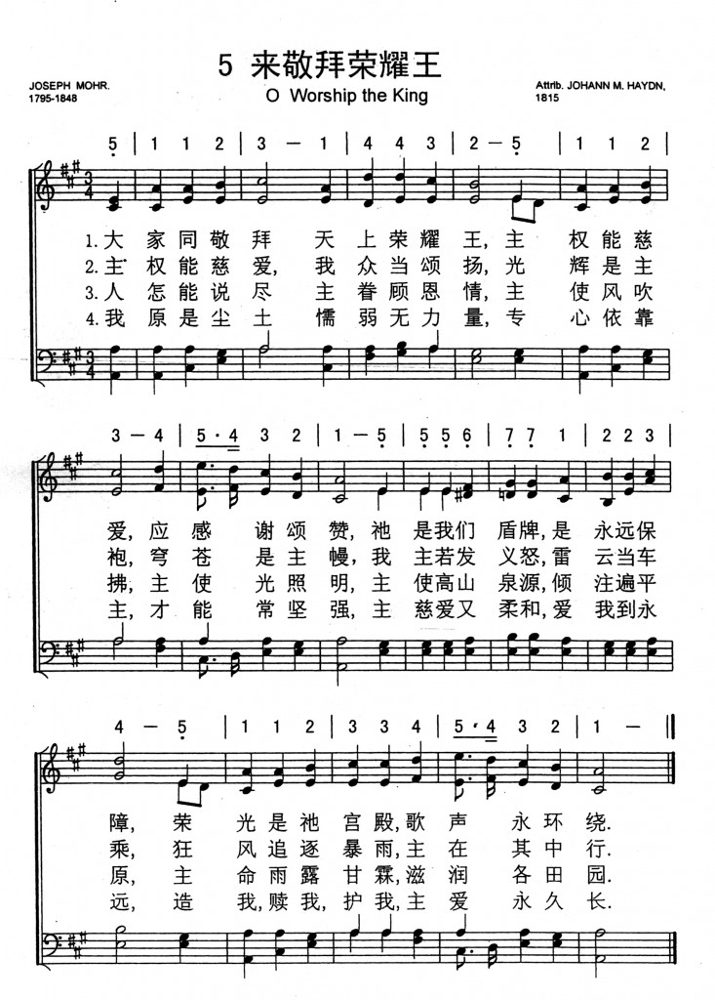

0002 O Worship the King _Robert
Grant 來敬拜榮耀王 ▲
| 簡介
O Worship the King, All Glorious Above! |
|
Addressing the first two stanzas to the singers of the hymn and the
last three to God, this free paraphrase of Psalm 104 recasts the
psalmist’s imagery with baroque verve. Though it was first published in
England, the tune has been more popular in North America than there.
|
|
O Worship the King all glorious above
Author: Robert Grant (1833)
Tune: LYONS
|
【來敬拜榮耀王】
詩集：生命聖詩，33 |
1 O worship the King
all-glorious above,
O gratefully sing his power and his love:
our shield and defender, the Ancient of Days,
pavilioned in splendor and girded with praise.
2 O tell of his might and sing of his grace,
whose robe is the light, whose canopy space.
His chariots of wrath the deep thunderclouds form,
and dark is his path on the wings of the storm.
3 Your bountiful care, what tongue can recite?
It breathes in the air, it shines in the light;
it streams from the hills, it descends to the plain,
and sweetly distills in the dew and the rain.
4 Frail children of dust, and feeble as frail,
in you do we trust, nor find you to fail.
Your mercies, how tender, how firm to the end,
our Maker, Defender, Redeemer, and Friend!
5 O measureless Might, unchangeable Love,
whom angels delight to worship above!
Your ransomed creation, with glory ablaze,
in true adoration shall sing to your praise!
Psalter Hymnal, (Gray)
|
大家同敬拜天上榮耀王，
主權能，慈愛，應感謝頌揚，
祂是我們盾牌，是永遠保障，
榮光是祂宮殿，歌頌永繞環。
主權能，慈愛，我們當頌讚，
光輝是主袍，穹蒼是主幔，
滿佈雷電密雲，當作主車乘，
瀰漫暴雨風狂，深藏主路徑。
人何能盡說，主眷顧恩情，
主使風吹拂，主使光照明，
主使高山泉源，傾注遍平原，
主命雨露甘霖，潤澤各田園。
我原是塵土，懦弱無力量，
專心依靠主，才能常堅強，
主慈愛又溫良，愛我到永久，
造我，贖我，護我，我救主，良友。 |
|

https://hymnary.org/hymn/GG2013/page/100
 |
|
|
http://www.hymncompanions.org/Nov/12/stream.php
齊當俯伏拜，榮耀大君王！主權能慈愛，須同心頌揚！
主亙古如盾牌，護我免災害，榮光罩若宮闈，頌聲環如帶。
主權能慈愛，我等當頌讚！光輝是主袍，穹蒼是主幔；
我主若發義怒，雷雲當車乘，狂風追逐暴雨，主在其中行。
人舌何能述，我主關切心，主使風吹拂，主使光生明；
主使高山泉源，下注遍平壤，主使甘霖時雨，潤澤各地方。
我原是微塵，懦弱無力量，專心依靠主，必能獲健康，
因主慈愛覆育，永遠無變更！至尊造化主宰，我救主大君。
 (請點耳機收聽)
(請點耳機收聽)
在宗教改革初期，教會崇拜儀式，一律只許唱詩篇或聖經章句，並無樂譜，全憑指揮領唱。 在英國形成了自創一格的「蘇格蘭詩篇」（Scottish
Psalter）。 1553-58年間，英國瑪麗女王宗教大逼迫時，許多新教徒亡命他國。
紀思（William Kethe）也是其中一人，他先去德國，繼往瑞士，他在這段時期作聖經英譯的工作，並將詩篇寫成韻文詩篇，其中有廿五首被收集在蘇格蘭詩篇集中。
葛萊特（Robert Grant, 1779-1838）生在印度也逝于印度。
他被稱為印度詩人。葛萊特的父親是英國人，在印度經商致富，任東印度公司董事長，回國後，被選為國會議員。 他是一個熱心的平信徒，政治家及慈善家。

葛萊特是律師及詩人，1831年被任命為樞密院委員，三年後被封為爵士，奉派印度，任孟買省長。他樂善好施，深得民心。 印度人以其名命名一醫學院，以資紀念. 。
1833年葛萊特讀紀思繙譯的詩篇104篇，啟發了他寫這首詩。許多權威人士稱它為敬拜神的模範聖詩，它讚美神的大能、恩典、眷顧和信實，全詩的韻律優美。他歌頌神為王、是造物主、是保護者，而人僅是微塵而已。
這首詩歌有兩個曲調，英國人喜歡克羅夫（William Croft, 1678-1727）所作的曲調，認為它在旋律、和聲、節奏上，配合得天衣無縫。
美國人則喜歡梅遜（ Lowell Mason）所選用的海頓之弟的曲譜。
有一首凱瑟（E.T. Cassel）的詩歌「我王事工」（The King's
Business）頗合今日靈修，其歌詩如下：
我在世為客旅，暫居留在異鄉，我家離此甚遠，在那黃金岸上；
今蒙我王派遣，為使者顯真光，我樂意工作為我王。
這是我王命令，普天之下人類，當從罪惡坑�堙A認罪悔改轉回；
凡聽從其聲者，與祂同坐王位，我樂作此工為我王。
（副歌）
美好信息我要傳揚，天使也願為此歌唱：「願你與神和好！」
救主亦發慈聲：「來與你們的神和好！」
(請點耳機收聽)
中英文聖詩集參考
英文歌名 O
Worship the King
頌主新歌 8
頌主新歌(中英雙語) 14
教會聖詩 241
生命聖詩
33
新聖詩 1
歡欣讚美 104
聖詩 1
恩頌聖歌 20
世紀讚頌 27
頌主聖詩 29
讚美詩(新編) 20
青年聖歌I 3
英文歌名 My
King's Business
青年聖歌I 127
（来源：《赞美诗新编史话》）
经文：“我的心哪，你要称颂耶和华 !耶和华我的神啊，你为至大。你以尊荣威严为衣服，披上亮光，如披外袍，铺张穹苍，如铺幔子” (诗 104：12)。
作者格兰特 (R．Grant，1779一 1838)
是英国圣公会平信徒，出生于印度孟加拉，因他父亲是英国东印度公司重要人物。他在剑桥大学毕业后于 1807年出任律师，靠父亲的余荫，l8l8年当选为国会议员，l833年在国会倡议取消限制犹太人的苛例， 1832年任最高法院审判官，越二年，出任英国驻孟买总督，并受爵位。在印度期间写了几本记述东印度公司的书籍，业余写圣诗投寄《基督教观察报》。1838年在印度去世后，他的爵士哥哥将他所写圣诗十二首集成一本诗集出版。
《荣耀大君王歌》是格兰特根据基思(事略参阅第 15首)的英语《日内瓦诗篇》l04篇于1834年重新改写的，因他读了基思的诗大受感动。
原诗有六节，《新编》所节删的第二、五两节，抄录于下：
主权能慈爱，我等当颂赞 !
光辉是主袍，穹苍是主幔，
黑云内藏雷电，主当车辇乘，
狂风追逐暴雨，主当道路行。
我原是微尘，懦弱无力量 !
专心倚靠主，必能获健康。
因主恩慈覆育，永远无变更 !
至尊造化主宰，我救主大君。
《普天颂赞》(旧版)第7首
《新编》所采用的曲调名《汉诺威(HANOVER)》，因该曲来自德国。有一段时期传说是韩德尔所谱，纪念韩德尔曾在该地当过宫廷音乐指挥。后来知道乃是克罗夫特为新编英文《日内瓦诗篇》第 104篇所编写的曲调。
曲作者克罗夫特 (E．Croft，1678— 1727)
是英国著名宗教音乐家。是继普塞尔 (Purcell)之后的又一伟大圣乐作曲家、管风琴家，幼年即受洗加入了教会，并在著名指挥家布洛 (Blou)教导下，加入了英国皇家教堂的唱诗班。 1700年任圣安妮教堂首席风琴师，达十一年之久， 1708年继布洛任英国威斯敏斯特教堂管风琴师及教堂作曲家。1713年牛津大学授与他音乐博士学位。他的宗教音乐作品很多，主要有《圣乐》、《圣歌集》、《羽管键琴曲选》等。他的赞美诗代表作即《新编》第22首《千古保障歌》1729年死后葬于英国威斯敏斯特教堂。他的墓志铭上写道：“和我们同居在世五十年中，他是极端坦诚的。现在他离开了我们，加入了天上的唱诗班中，得以接近天使们的音乐会，并同声高唱哈利路亚 !”
这首诗还有一首通用调名《里昂 (LYON)》，是奥国乐圣海顿之弟迈克尔.海顿 (M.Haydn)所谱，即《普天颂赞》(旧版)第32首。简谱如下：（略）
《汉诺威》与《里昂》两首调极相似，又都是三拍的，通用时,都能表达赞美大君王的心情。
http://www.congsing.org/oh_worhip_the_king.html
Robert Grant, 1833
Based on Psalm 104
Addressed to one another, then to God
|
Oh, worship the King |
|
|
all glorious above, |
Ps. 113:4 |
|
oh, gratefully sing |
|
|
his pow’r and his love; |
|
|
our shield and Defender, |
Ps. 5:11–12 |
|
the Ancient of Days, |
Dan. 7 |
|
pavilioned in splendor |
Ps. 104:1 |
|
and girded with praise. |
|
| |
|
|
Oh, tell of his might, |
|
|
oh, sing of his grace, |
|
|
whose robe is the light, |
Ps. 104:2 |
|
whose canopy space. |
|
|
His chariots of wrath |
Ps. 104:3–4 |
|
the deep thunderclouds form, |
|
|
and dark is his path |
2 Sam. 22:11–13; Ps. 18:9–11 |
|
on the wings of the storm. |
|
| |
|
|
The earth with its store |
Ps. 104:5 |
|
of wonders untold, |
|
|
Almighty, your pow’r |
Jer. 10:12 |
|
has founded of old; |
|
|
has ’stablished it fast |
Ps. 119:90 |
|
by a changeless decree, |
|
|
and round it has cast, |
Ps. 104:6–9 |
|
like a mantle, the sea. |
|
| |
|
|
Your bountiful care |
|
|
what tongue can recite? |
|
|
It breathes in the air; |
|
|
it shines in the light; |
|
|
it streams from the hills; |
Ps. 104:10–12; Is. 41:18 |
|
it descends to the plain; |
|
|
and sweetly distils |
Ps. 104:13 |
|
in the dew and the rain. |
|
| |
|
|
Frail children of dust, |
Gen. 3:19; Ps. 104:29 |
|
and feeble as frail, |
|
|
in you do we trust, |
Ps. 9:10 |
|
nor find you to fail; |
|
|
your mercies how tender, |
Lam. 3:22–23; James 5:11 |
|
how firm to the end, |
|
|
our Maker, Defender, |
|
|
Redeemer, and Friend! |
|
| |
|
|
O measureless Might! |
Job 37:23; Eph. 1:19 |
|
Ineffable Love! |
Eph. 3:19 |
|
While angels delight |
|
|
to hymn you above, |
|
|
the humbler creation, |
|
|
though feeble their lays, |
|
|
with true adoration |
Ps. 145:10, 18; Mal. 1:11; John 4:24 |
|
shall lisp to your praise. |
|
Modern democratic culture has reduced our concept of royalty to something
merely picturesque, ceremonial, or historical. We serve no one and pledge
allegiance to no one but ourselves (unless it be to a ball team!), and even
those who remain nominally subjects of a monarch usually live as functional
democrats. We have good reasons for championing political equality, but, to
the extent we succeed, we need all the more to resist the age-old inclination
to conceptualize God according to the political models of this world. For the
kingdom of heaven is no democracy. Christians today typically share with
non-Christians a sense of individual autonomy, but they are in fact subjects
of a king (1 Sam. 12:12; Matt. 6:33; Col. 1:13). We must not treat service,
allegiance, and worship as fictional or ceremonial categories. We belong to
the kingdom of God, and to think biblically we must recover what it means to
live and die in the service of our sovereign Lord.
The first four verses of Psalm 104 describe God in kingly terms that the poet
of this hymn, Robert Grant, vividly develops, overtly calling God “King” in
his opening line. The Ancient of Days, whom Daniel saw enthroned in judgment,
is “pavilioned in splendor and girded with praise.” His regalia are the very
elements of the cosmos: light and space. From high above he rides to battle
through the storm. In creating the earth, he acted by changeless decree and
set up a treasury of wonders.
And what kind of a king is God? Grant follows the psalmist in shaping his poem
to emphasize the king’s power and love—divine attributes that go together and
cannot be separated, except by theological abstraction. We are to “sing his
pow’r and his
love.” Put power and love together and what do you have? A shield. A defender.
Stanza 2 restates the charge of stanza 1, line 4: we are to tell of his might
(i.e., power) and his
grace (i.e., love). So, in stanza 3, we tell of his mighty works
of creation—and we shift from addressing one another to addressing God
himself. Then, in stanza 4 we sing of his caring works
of providence. In a sweeping summary of Ps. 104:10–30, we attempt the
impossible. We try to recite how his care breathes and shines, how it streams
and descends and sometimes just materializes, like dew on the grass. Stanza 5
contrasts God’s love with
man’s propensity for evil. We are frail children of dust. Literally. Our
forebears once were dust, and to dust they did return because of their sin.
And stanza 5 also contrasts God’s power with
our feebleness. His mercies are both tender (i.e., loving) and firm (i.e.,
powerful). We trust him and find that he never fails us. In wonder, our
worship is reduced to a mere listing of titles: God is “our Maker, Defender,
Redeemer, and Friend.” Stanza 6 summarizes: he is “measureless Might”
(referring back to st. 3) and “ineffable Love” (referring back st. 4).
Unfortunately, many hymnals obscure Grant’s twofold design by reproducing a
corrupt version of the most critical line: instead of “oh, gratefully sing his
pow’r and his love,” one often finds “and gratefully sing his wonderful love.”
Stanza 6 brings us back to where we started. The exhortation to worship the
King has been heeded, and there is true adoration in the lisped praise of all
who mean these words. The poet enhances the sense of closure here by beginning
and ending stanza 6 with the same words with which he began and ended stanza 1
(“O” at the beginning and “praise” at the end).
The poem is a call to action realized. This poetic movement from potentiality
to action is complemented by the unusual meter. The five-syllable lines in the
first half of the stanza create a starting-and-stopping effect, which, in the
second half of the stanza, gets swept away in a flowing stream of anapests.
We can represent this visually with an “x” for a metrically unaccented
syllable, a slanting stroke for a metrically accented syllable, and two
vertical lines for the starting-and-stopping effect:
lines 1–2: x / x x / �� x / x x /
lines 3–4: x / x x / �� x / x x /
lines 5–6: x / x x / x x / x x /
lines 7–8: x / x x / x x / x x /
Or, using boldface type to indicate accented syllables in the first stanza:
Oh, worship the King �� all glorious above,
oh, gratefully sing �� his pow’r and his love;
our shield and Defender, the Ancient of Days,
pavilioned in splendor and girded with praise.
The tune LYONS (1815) greatly
heightens this tendency of lines 5-6 to sweep away any hesitance that lingers
in the air. The melody in the first four lines rises (“worship the King”),
falls (“glorious above”), rises (“gratefully sing”), and falls again (“pow’r
and his love”) in tidy arches that, together, constitute a harmonically closed
unit. Then, in the fifth line, it climbs inexorably, step by step, for almost
an octave, while, below, the bass holds firmly to the fifth scale-degree.

The musical energy of these lines never lets up but is sustained and
compounded over the course of eleven syllables to be released only in lines
7-8. Next time you sing this in church, consider the swell at “His chariots of
wrath the deep thunderclouds form,” or “it streams from the hills; it descends
to the plain”—images of God’s approach. The effect is just right. So, too, is
the placement of “pow’r” and “girded” in the first stanza on the highest note
and most active rhythm. Thus the tune does its part to elicit an
acknowledgment of his royal majesty.
https://hymnary.org/text/o_worship_the_king_all_glorious_above
Scripture References:
st. 1 = Ps. 18:2, Dan. 7:9, 13, 22
st. 2 = Ps. 18:9-12, Ps. 104:1-3
st. 3 = Ps. 104:7-10
st. 5 = Ps. 145:10
Robert Grant (b. Bengal, India, 1779; d. Dalpoorie, India, 1838) was influenced
in writing this text by William Kethe’s (PHH
100) paraphrase of Psalm 104 in the Anglo-Genevan Psalter (1561). Grant’s
text was first published in Edward Bickersteth’s Christian
Psalmody (1833) with several unauthorized alterations. In
1835 his original six-stanza text was published in Henry Elliott’s Psalm
and Hymns. Stanza 3 was omitted in the Psalter Hymnal.
Rather than being a paraphrase or versification, the text is a meditation on the
creation theme of Psalm 104. Stanzas 1-3, which allude to Psalm 104:1-6, focus
on God’s creation as a testimony to his “measureless Might.” More personal in
tone, stanzas 4 and 5 confess the compassion of God toward his creatures and
affirm with apocalyptic vision that the “ransomed creation, with glory ablaze”
will join with angels to hymn its praise to God.
Of Scottish ancestry, Grant was born in India, where his father was a director
of the East India Company. He attended Magdalen College, Cambridge, and was
called to the bar in 1807. He had a distinguished public career a Governor of
Bombay and as a member of the British Parliament, where he sponsored a bill to
remove civil restrictions on Jews. Grant was knighted in 1834. His hymn texts
were published in the Christian Observer (1806-1815),
in Elliot’s Psalms and Hymns (1835), and
posthumously by his brother as Sacred Poems (1839).
Liturgical Use:
An opening hymn of praise; because of the hymn’s relationship to Psalm 104, see
suggestions for use at PHH
104.
--Psalter Hymnal Handbook
=======================
O worship the King, All-glorious above. Sir R. Grant . [Psalms
civ.] This version of Psalms civ. is W. Kethe's rendering of the same psalm
in the Anglo-Genevan Psalter of 1561, reset
by Sir R. Grant in the same metre but in a less quaint and much more ornate
style, as a quotation of Kethe's stanzas i., iii. will show:—
"My ƒoule praise the Lord,
speake good of his Name
0 Lord our great God
how doeƒt thou appear?
So passing in glorie,
that great is thy fame,
Honour and maieƒtie,
in thee ƒhine moƒt cleare.
"His chamber beames lie,
in the clouds full ƒure,
Which as his chariot,
are made him to beare.
And there with much ƒwiftneƒƒ
his courƒe doth endure:
Vpon the wings riding.
Of winds in the aire."
Sir R. Grant's version was given in Bickersteth's Church
Psalmody, 1833, No. 17; in Elliott's Psalms and Hymns,
1835; and in Lord Glenelg's edition of Grant's Sacred Poems.
1839, p. 33. From the Preface to Elliott's Psalms & Hymns we
find that the text in Bickersteth was not authorized. It was altered from a
source at present unknown to us. The authorized text is in the Hymnal
Companion, 1876, with stanza ii., l. 3, thus-—
“His chariots of wrath the deep thunderclouds form."
This text with the omission of the "the" is ill extensive use in all
English-speaking countries. It is also in use in an abbreviated and slightly
altered form as in Hymns Ancient & Modern, 1861 ; and in
the full form, but still altered as before, in Hymns Ancient &
Modern1875. The 1839 text is in Church Hymns, 1871; Hymnal
Companion, 1876; Turing's Collection, 1882, and
others. It has been translation into Latin by R. Bingham, in his Hymnologia
Christiana Latina, 1871, p. 143, as, "Glorioso ferte Regi vota vestra
carmine."
--John Julian, Dictionary of Hymnology (1907)
Text:
Grant’s text is a resetting of William Kethe’s rendering of Psalm 104 first
published in 1561. Albert Bailey wrote of this text: “It is no small
accomplishment to combine, as this hymn does, the majestic, the tender, and a
smooth-flowing poetical rendering” (Gospel in Hymns, 182). The text has
not been changed much from Grant’s original. Some verses are not included in all
hymnals – unlike most hymnals, the Psalter Hymnal leaves
out the original third stanza, which reads, “The earth with its store of wonders
untold, Almighty, thy power hath founded of old; hath ‘stablished it fast by a
changeless decree, and round it hath cast, like a mantle, the sea.” The Psalter
Hymnal does, however, include a verse many hymnals leave out,
beginning “O measureless Might.”
Tune:
The most common tune for Grant’s text is LYONS. For most of the tune’s
existence, its composition was attributed to either of the Haydn brothers. In
2000, Margaret K. Dismore discovered that the tune was actually composed by
Joseph Martin Kraus, a German composer who was probably in London, along with
Haydn, when Kraus’ sonata was premiered, the first line of which became the
theme of this hymn tune. Hymn tune analyst Paul Westermeyer describes this tune
as an example of a popular instrumental melody broken into a “congregational
idiom,” and done quite well (Let the People Sing, 204).
A second tune that is often put to Grant’s text is HANOVER. This tune also had a
mix-up over who actually composed it. For many years it was attributed to
Handel, but is now generally ascribed to William Croft. Both of these tunes are
excellent. HANOVER is spritely, but does jump around a bit melodically, while
LYONS tends to have steadier climbs and natural progressions, and might be more
comfortable for congregations, unless you’ve been singing HANOVER for a long
time already. If you’re looking for an arrangement for worship band, Chris
Tomlin has a version with an easily adaptable riff for violin or electric
guitar, and a great original chorus.
Alternative Harmonizations:
1. Organ
2. Piano
When/Why/How:
“O Worship the King” is most often used as a hymn of gathering and a call to
worship. It can be used any time during the liturgical calendar, but it would be
especially fitting on Christ the King Sunday, the last Sunday before Advent. It
could be paired well with the contemporary song “He Reigns” and the great hymn,
“All Creatures of Our God and King.”
Suggested Choral arrangements:
Laura de Jong,
Hymnary.org
|
Short Name: |
William Croft |
|
Full Name: |
Croft, William, 1678-1727 |
|
Birth Year: |
1678 |
|
Death Year: |
1727 |
William Croft, Mus. Doc.
was born in the year 1677 and received his musical education in the Chapel
Royal, under Dr. Blow. In 1700 he was admitted a Gentleman Extraordinary of
the Chapel Boyd; and in 1707, upon the decease of Jeremiah Clarke, he was
appointed joint organist with his mentor, Dr. Blow. In 1709 he was elected
organist of Westminster Abbey. This amiable man and excellent musician died
in 1727, in the fiftieth year of his age. A very large number of Dr. Croft's
compositions remain still in manuscript.
Cathedral chants of
the XVI, XVII & XVIII centuries, ed. by Edward F. Rimbault, London:
D. Almaine & Co., 1844
LYONS
Composer (attributed to): Joseph Martin Kraus; Composer
(attributed to): Michael Haydn
Published in 465
hymnals
LYONS
Composer (attributed to): Joseph Martin Kraus; Composer
(attributed to): Michael Haydn
Published in 465
hymnals
|
Short
Name: |
Joseph Martin
Kraus |
|
Full Name: |
Kraus, Joseph
Martin, 1756-1792 |
|
Birth
Year: |
1756 |
|
Death
Year: |
1792 |

Joseph Martin
Kraus (b. Miltenberg am Main, Germany, 1756; d.
Stockholm, Sweden, 1792) spent his youth in Germany, but in 1778 moved
to Stockholm. He was elected to the Swedish Academy of Music and became
the conductor of the court orchestra and eventually the best-known
composer associated with the court of Gustavus III. On his travels,
Kraus did meet Franz Joseph Haydn, who considered Kraus “one of the
greatest geniuses I have met.” Kraus wrote operas as well as many vocal
and instrumental works.
|
Short Name: |
Michael Haydn |
|
Full Name: |
Haydn, Michael, 1737-1806 |
|
Birth Year: |
1737 |
|
Death Year: |
1806 |
Johann Michael
Hadyn Austria 1737-1806. Born at Rohrau, Austria, the
son of a wheelwright and town mayor (a very religious man who also played
the harp and was a great influence on his sons' religious thinking), and the
younger brother of Franz Joseph Hadyn, he became a choirboy in his youth at
the Cathedral of St. Stephen in Vienna, as did his brother, Joseph, an
exceptional singer. For that reason boys both were taken into the church
choir. Michael was a brighter student than Joseph, but was expelled from
music school when his voice broke at age 17. The brothers remained close all
their lives, and Joseph regarded Michael's religious works superior to his
own. Michael played harpsichord, violin, and organ, earning a precarious
living as a freelance musician in his early years. In 1757 he became
kapellmeister to Archbishop, Sigismund of Grosswarden, in Hungary, and in
1762 concertmaster to Archbishop, Hieronymous of Salzburg, where he remained
the rest of his life (over 40 years), also assuming the duties of organist
at the Church of St. Peter in Salzburg, presided over by the Benedictines.
He also taught violin at the court. He married the court singer, Maria
Magdalena Lipp in 1768, daughter of the cathedral choir-master, who was a
very pious women, and had such an affect on her husband, trending his
inertia and slothfulness into wonderful activity. They had one daughter,
Aloysia Josepha, in 1770, but she died within a year. He succeeded Wolfgang
Amadeus Mozart, an intimate friend, as cathedral organist in 1781. He also
taught music to Carl Maria von Weber. His musical reputation was not
recognized fully until after World War II. He was a prolific composer of
music, considered better than his well-known brother at composing religious
works. He produced some 43 symphonies,12 concertos, 21 serenades, 6
quintets, 19 quartets, 10 trio sonatas, 4 due sonatas, 2 solo sonatas, 19
keyboard compositions, 3 ballets, 15 collections of minuets (English and
German dances), 15 marches and miscellaneous secular music. He is best known
for his religious works (well over 400 pieces), which include 47 antiphons,
5 cantatas, 65 canticles, 130 graduals, 16 hymns, 47 masses, 7 motets, 65
offertories, 7 oratorios, 19 Psalms settings, 2 requiems, and 42 other
compositions. He also composed 253 secular vocals of various types. He did
not like seeing his works in print, and kept most in manuscript form. He
never compiled or cataloged his works, but others did it later, after his
death. Lothar Perger catalogued his orchestral works in 1807 and Nikolaus
Lang did a biographical sketch in 1808. In 1815 Anton Maria Klafsky
cataloged his sacred music. More complete cataloging has been done in the
1980s and 1990s by Charles H Sherman and T Donley Thomas. Several of Michael
Hadyn's works influenced Mozart. Hadyn died at Salzburg, Austria.
John Perry
https://www.umcdiscipleship.org/resources/history-of-hymns-o-worship-the-king
"O Worship the King"
Robert Grant
The UM Hymnal, No. 73
O worship the King,
All glorious above,
O gratefully sing
God’s power and God’s love;
Our Shield and Defender,
The Ancient of Days,
Pavilioned in splendor,
And girded with praise.
“O Worship the King” draws upon the splendor of 19th-century monarchy as a
metaphor for the magnificence of the Almighty. Attributes of an earthly
monarch are magnified to communicate the characteristics of the King of
kings—one who by nature cannot be described.
The hymn is based primarily on the rich imagery of Psalm 104:1-7:
“Bless the LORD, O my soul. O LORD my God,
you are very great.
You are
clothed with honor and majesty, wrapped in light as with a garment.
You
stretch out the heavens like a tent,
you set the beams of your chambers on
the waters,
you make the clouds your chariot,
you ride on the wings of the
wind,
you make the winds your messengers, fire and flame your ministers.
You
set the earth on its foundations, so that it shall never be shaken.
You
cover it with the deep as with a garment; the waters stood above the
mountains.
At your rebuke they flee;
at the sound of your thunder they take
to flight.”
The author deftly combines additional biblical images with the splendor of a
ruling monarch to paint an image of God as King in earthly terms.
In stanza one, the monarch’s role of protector of the realm
is captured in “Our Shield and Defender.” Psalm 84:9 is one of many passages
referring to God as our Shield: “Behold, O God our Shield, and look upon the
face of thine anointed.”
“The Ancient of Days” parallels the lineage of an earthly monarch—the family
line that leads to the throne. References to God as “Ancient of Days” are
found in Daniel 7:9, 13 and 22: “As I watched, thrones were set in place,
and an Ancient One took his throne, his clothing was white as snow, and the
hair of his head like pure wool; his throne was fiery flames, and its wheels
were burning fire” (Daniel 7:9).
Stanza two identifies this monarch as the sovereign of all
created order, “whose canopy [is] space” and whose “chariots of wrath” form
“deep thunderclouds.” Following the narrative of Psalm 104:8-32, stanzas
three and four detail God’s earthly handiwork in the natural world.
The final stanza turns to humanity as a part of creation:
“Frail children of dust, and feeble as frail. . . .” In antithesis to the
majesty and all-powerful nature of the Almighty described in earlier
stanzas, we find a monarch that manifests “mercies how tender, how firm to
the end. . . .” Unlike earthly kings, the unique nature of this ruler is
captured in the final line of the hymn: “Our Maker, Defender, Redeemer, and
Friend.” This hymn captures in 19th-century terms the fuller nature of God’s
relationship to humanity.
Composer Sir Robert Grant (1779-1838) was born and died in India—a country
that by this time had long played a major role in the British Empire. He was
a public servant distinguishing himself in law, serving as a member of
Parliament, judge advocate general and governor of Bombay (now Mumbai).
Despite his Scottish roots, Grant was Anglican, not Presbyterian. His father
Charles was a leader in the evangelical wing of the Church of England and
also played an active civic role with William Wilberforce in the
emancipation of African slaves in the British Empire. Robert was born in
India when his father went there to negotiate an end to barriers set up
against missions by the British East India Company.
The hymn was published posthumously in 1839 in Sacred
Poems, a volume edited by Grant’s brother, Lord Glenelg. It had
appeared in an earlier form in 1833, but the 1839 publication was said to be
a “more correct and authentic version.”
According to British hymnologist Erik Routley, Grant—though not a prolific
hymn writer—provides a “good example of the impact on hymnody of the
new search for poetic standards which [Reginald] Heber so strongly promoted.”
Heber (1783-1826), the writer of the famous “Holy, Holy, Holy! Lord
God Almighty,” is often considered the leader of Romantic hymn
writers in the early 19th century. More importantly, he shared Grant’s
ecclesial interests as a mission-minded bishop of the Church of England who
died while serving as Bishop of Calcutta (now Kolkata), West Bengal, India.
Dr. Hawn is professor of sacred music at Perkins School of Theology, SMU.
https://www.hymnologyarchive.com/o-worship-the-king
Psalm 104
with
HANOVER
LYONS
I. Text:
Origins
This hymn by
Robert
Grant (1780–1838), a paraphrase of Psalm 104, first
appeared in Edward Bickersteth’s
Christian Psalmody (London: E.B. Seeley & Sons, 1833 | Fig. 1), in
six stanzas of four lines, without music, unattributed. In the earliest
printings, each line was divided into two smaller phrases by an em-dash,
but in subsequent editions the em-dash was removed in favor of longer
phrases.
Psalm 104
O worship the King
with
HANOVER
LYONS
I. Text: Origins
This hymn by Robert Grant (1780–1838), a
paraphrase of Psalm 104, first appeared in Edward Bickersteth’s Christian
Psalmody (London: E.B. Seeley & Sons, 1833 | Fig. 1), in six stanzas of four
lines, without music, unattributed. In the earliest printings, each line was
divided into two smaller phrases by an em-dash, but in subsequent editions the
em-dash was removed in favor of longer phrases.

View fullsize

36-804_o-1_Bickersteth-4.jpg
View fullsize
Fig. 1.
Edward Bickersteth, Christian
Psalmody (London: E.B. Seeley &
Sons, 1833).
Fig. 1. Edward Bickersteth, Christian
Psalmody (London: E.B. Seeley & Sons, 1833).
The hymn then appeared in H.V. Elliott’s
Psalms and Hymns for Public, Private, and Social Worship (London: Holdsworth and
Ball, 1835 | Fig. 2), this time reformatted as three stanzas of eight lines. The
differences here are very minor: a change from “establish’d” to “stablish’d,”
which works better for the meter, a change from “It streams” to “In streams,”
and a correction to the last phrase, “shall lisp to thy praise.” In his
Dictionary of Hymnology, p. 855, John Julian claimed, “From the preface to
Elliott’s Ps. & Hys. we find that the text in Bickersteth was not authorized,”
except no known edition of Elliott’s collection contains a preface, and this
claim cannot otherwise be confirmed.
 View
fullsize
View
fullsize
Elliott-Psalms&Hymns-1835-47.jpg
View fullsize
Fig. 2.
H.V. Elliott, Psalms and
Hymns for Public, Private, and Social Worship
(London: Holdsworth and Ball, 1835).
Fig. 2. H.V. Elliott, Psalms and Hymns
for Public, Private, and Social Worship (London: Holdsworth and Ball, 1835).

Lastly, the hymn appeared in a
posthumous edition of Grant’s work, Sacred Poems (London: Saunders and Otley,
1839), edited by Grant’s brother, Charles Grant (Lord Glenelg). The preface
indicated how the hymns in this edition represented “a more correct and
authentic version” than what had previously circulated. In this collection, the
hymn was reformatted again, this time in six stanzas of eight short lines. The
text is in agreement with Elliott’s version, except a change back to “It
streams,” and the omission of “The” before “deep thunder-clouds,” which
interrupts the flow of the meter.
sacred00gran_orig_0043.jpg
sacred00gran_orig_0044.jpg
Fig. 3.
Robert Grant, Sacred Poems
(London: Saunders and Otley, 1839).
Fig. 3. Robert Grant, Sacred Poems
(London: Saunders and Otley, 1839).
II. Text: Analysis
Grant’s text is a free paraphrase of
Psalm 104, roughly covering verses 1–13 and 24–33. He patterned the meter after
the traditional setting of 10.10.11.11 established by William Kethe’s version in
Foure Score and Seuen Psalmes of Dauid (Geneva, 1560), repeated in the complete
English psalter of 1562, The Whole Booke of Psalmes, Collected into Englysh
Metre by T. Sternhold, J. Hopkins & Others [see Sternhold & Hopkins]. This
connection is reflected in the way Bickersteth’s and Elliott’s printings gave
the meter as “104th M.”
For hymnologist Erik Routley
(1917–1982), this hymn ranked among his favorites:
For sheer literary grace and beauty this
may be one of the six finest hymns in the language. We all love it for its
combination of effortless energy, high-spirited innocence, and the occasional
touch of superb dignity. Almost every word in it is a word in the common man’s
vocabulary—the vocabulary both of its own day and of ours. Yet in the first and
last verses there rise two towering lines, built in monolithic style, which give
a grand sweep of structure to the whole—
Pavilion’d in splendour, and girded with
praise . . . O measureless might, ineffable love.
This highly wrought and eloquent
simplicity gives the whole hymn a texture which very happily reflects that of
the psalm on which it is founded. For the 104th Psalm is, even among the psalms,
an astonishing piece of writing. . . . The total message of the hymn is that all
that is set down in Psalm 104 is a pageant not merely of God’s power but also of
his love. This takes us to the heart of the Christian teaching on creation.[1]
Note: Some sources, including Edwin
Hatfield in The Poets of the Church (1884), have claimed “O worship the King”
was published in the Christian Observer in 1806 and revised in 1812. This is not
correct; the hymn appearing in that publication on those dates was “When
gathering clouds around I view” (PDF).
III. Tunes
1. HANOVER
In England, the preferred tune is
HANOVER, generally attributed to William Croft (1678–1727), first published in A
Supplement to the New Version of Psalms, 6th ed. (Savoy: John Nutt, 1708 | Fig.
4). The original printing was headed Psalm LXVII even though the tune was
intended for the 149th Psalm of Tate & Brady’s New Version (1696/1698) or Psalm
104 of the old Sternhold & Hopkins edition (1562). The music was in two parts,
melody and bass, set to “Our God bless us all in mercy and love,” which is a
paraphrase of Psalm 67, author unknown, first printed in the first edition of
this supplement (1700) with a different tune.
 View
fullsize
SupplementtoNewVersion-6thEd-1708-110.jpg
View
fullsize
SupplementtoNewVersion-6thEd-1708-110.jpg
View fullsize
Fig. 4.
A Supplement to the New Version of Psalms , 6th ed. (Savoy: John Nutt,
1708).
Fig. 4. A Supplement to the New Version
of Psalms, 6th ed. (Savoy: John Nutt, 1708).
This tune was first called HANOVER in A
Collection of Tunes, suited to … Watts’s Imitation of the Psalms of David
(1722), named after the House of Hanover, which was the royal family of King
George I (1660–1727). J.R. Watson has called it “a magnificent and strong tune
which carries the words with great conviction and sureness.”[2] See Leaver &
Temperley (1994) for further discussion on issues related to Croft’s authorship.
2. LYONS
The other most common tune is LYONS,
most likely by Joseph Martin Kraus (1756–1792), from his “Thema med variationer”
(scherzo), possibly written in 1784 or 1785 during a visit to London. Two
manuscript copies of Kraus’ piece are held at Kungl Musikaliska Akademien,
Stockholm, and at Uppsala University. The oldest surviving printed copy
attributed to Kraus is in Musikaliskt Tidsfördrif, no. 14–15 (1793 | Fig. 5).
 View
fullsize
Fig. 5.
Musikaliskt Tidsfördrif, no.
14–15 (1793), reprinted in The Hymn
, vol. 58, no. 2 (Spring 2007), p. 30.
View
fullsize
Fig. 5.
Musikaliskt Tidsfördrif, no.
14–15 (1793), reprinted in The Hymn
, vol. 58, no. 2 (Spring 2007), p. 30.
Fig. 5. Musikaliskt Tidsfördrif, no.
14–15 (1793), reprinted in The Hymn, vol. 58, no. 2 (Spring 2007), p. 30.
A few additional early printings of this
tune have added to the confusion of authorship. The oldest known printing of
this melody is “A Minuetto con XII variazioni per il piano forte con
accompagnamento d’un violin,” published in London in 1791 and attributed to
Ignaz Pleyel. The same piece was published under an English title, “Sonatina
with Twelve Variations,” ca. 1805, credited to “G. Haydn,” which seems to be the
source for all subsequent attempts to credit the tune to either Joseph
(Giuseppe) Haydn or Johann (Giovanni) Michael Haydn. Some scholars believe the
Pleyel and Haydn copies were plagiarized and sold by publishers to capitalize on
the popularity of the two composers.
View fullsize
Fig. 6.
Sacred Melodies from Haydn, Mozart, and Beethoven , vol. 2 (London:
William Gardiner, 1815).
Fig. 6. Sacred Melodies from Haydn,
Mozart, and Beethoven, vol. 2 (London: William Gardiner, 1815).
The tune entered English hymnody through
William Gardiner’s Sacred Melodies from Haydn, Mozart, and Beethoven, vol. 2
(London: William Gardiner, 1815 | Fig. 6), where it was set to Philip
Doddridge’s hymn “O praise ye the Lord, prepare a new song” in an arrangement
for small orchestra. Gardiner is credited for assigning the name LYONS, a city
in France, for unknown reasons, although this name does not appear on the same
page as the arrangement. Gardiner also perpetuated the attribution to Haydn.
by CHRIS FENNER
for Hymnology Archive
15 February 2019
rev. 20 March 2019
Footnotes:
Erik Routley, Hymns and the Faith
(London: John Murray, 1955), pp. 8–9.
J.R. Watson, An Annotated Anthology of
Hymns (Oxford: University Press, 2002), p. 264.
Related Resources:
John Julian, “O worship the King,” A
Dictionary of Hymnology (London, 1892), pp. 854–855: Google Books
Bertil H. van Boer Jr., Die Werke von
Joseph Martin Kraus (Stockholm: Kgl. schwedische Musikakademie, 1988).
J. Wilson, “Julian and ‘O worship the
King,’” Hymn Society of Great Britain and Ireland, Bulletin, vol. 12 (October
1989), p. 155.
Fred L. Precht, “Oh worship the King,”
Lutheran Worship Hymnal Companion (St. Louis: Concordia, 1992), pp. 474–475.
David W. Music, “LYONS,” Hymnal 1982
Companion, vol. 3B (NY: Church Hymnal Corp., 1994), p. 996–997.
Robin A. Leaver & Nicholas Temperley, “O
worship the King, all glorious above,” Hymnal 1982 Companion, vol. 3B (NY:
Church Hymnal Corp., 1994), pp. 727–731.
Bert Polman, “O worship the King,”
Psalter Hymnal Handbook (Grand Rapids: CRC, 1998), p. 588–589.
Margaret K. Dismore, “LYONS: A tune in
search of its composer,” The Hymn, vol. 58, no. 2 (Spring 2007), pp. 27–31:
HathiTrust
Carl P. Daw Jr. “O worship the King, all
glorious above!” Glory to God: A Companion (Louisville: Westminster John Knox,
2016), pp. 43–44.
“O worship the King, all glorious
above,” Hymnary.org:
https://hymnary.org/text/o_worship_the_king_all_glorious_above
https://en.wikipedia.org/wiki/Robert_Grant_(MP)
From Wikipedia, the free encyclopedia
Sir Robert Grant GCH (1779
– 9 July 1836) was a British lawyer and politician.
Robert Grant was born in India,
the son of Charles
Grant, chairman of the Directors of the Honourable
East India Company, and younger brother of Charles
Grant, later Lord Glenelg. Returning home with their father in 1790,
the two brothers were entered as students of Magdalene
College, Cambridge, in 1795. In 1801 Charles was fourth wrangler and
senior Chancellor's medallist; Robert was third wrangler and second
Chancellor's medallist.[1]
Grant was called
to the bar the same day as his brother, 30 January 1807, and entered
into legal practice, becoming King's Sergeant in the Court of the Duchy
of Lancaster, and one of the Commissioners
in Bankruptcy. He was elected Member
of Parliament for the Elgin
Burghs in 1818, and for the Inverness
Burghs in 1826. The latter constituency he represented for four years.
In 1830 and 1831, he was returned for Norwich,
and in 1832 for Finsbury.
He advocated for the removal of the disabilities of
the Jews, and twice carried bills on the subject through the House
of Commons. They were, however, rejected in the Upper
House, which did not yield on the question until 1858, twenty years
after Grant's death. In 1832 he became Judge
Advocate General, and in 1834 was appointed Governor
of Bombay. As governor, Grant was a law unto himself and under his
rule a multitude of large-scale projects were pushed forward which were to
transform the shape of British policy in the East. He was a key player in
the decision to
occupy Aden, which was carried out shortly after his death.[2]
He died at Dapodi,
near Poona on
9 July 1838.[3]His
remains are housed in the St.
Mary's Church, Poona.[4]
In his younger days Grant published an essay
on the trade and government of India, and a sketch of the early history of
the British
East India Company. He was the author of a volume of sacred poems,
which was edited and published after his death by his brother, Lord
Glenelg. This volume includes some hymns; his best known hymn is "O
Worship the King",[5] based
on Psalm
104. Another hymn is "Savior,
When in Dust to Thee."[6]
Grant Medical College, the oldest medical
college in Mumbai,
India, is named after Robert Grant, as are Grant Road and Grant Road
Station in the same city.
Grant married Margaret, only daughter of Sir
David Davidson of Cantray, with issue two sons and two daughters:
- Sir Charles Grant, K.C.S.I, formerly a
Member of Council in India;
- Colonel Robert Grant, R.E., Deputy
Adjutant General;
- Sibylla Sophia, married to Granville
Ryder, Esq.; and
- Constance Charemile, who died in
childhood.
Ten years after his death, Margaret married Josceline
Percy, second son of the
Earl of Beverley, with issue one son, George Algernon, born in 1849,
who later became Capt. and Lt. Col. of the Grenadier Guards.
References[edit]
-
^ "Grant,
Robert (GRNT795R)". A Cambridge Alumni Database.
University of Cambridge.
-
^ R. J. Gavin, Aden
Under British Rule, 1839–1967, Barnes & Noble, 1975, p. 29 and
following.
-
^ Kulkarni,
Sumitra (1995). The
Satara Raj, 1818-1848: A Study in History, Administration, and
Culture. Mittal Publications. p. 27. ISBN 978-8-17099-581-4.
-
^ "The
Bombay Diocesan Trust Association Pvt. Ltd". www.bdtapvtltd.org.
Retrieved 19
August 2021.
-
^ Oh,
Worship the King (full text); this hymn is set to Hanover (mp3
is organ only; four verses)
-
^ Savior,
When in Dust to Thee (text omits stanza three of the Gran's
version. The omitted stanza begins, "By the sacred griefs that wept
/ O'er the grave where Lazarus slept;). This hymn is set to Spanish
Chant (mp3 is organ only; four verses)
Attribution  This
article incorporates text from a publication now in the public
domain: The Northern Highlands in the nineteenth century (1907)
by James Barron
This
article incorporates text from a publication now in the public
domain: The Northern Highlands in the nineteenth century (1907)
by James Barron
External links[edit]
詩篇 104
| |
詩篇 104 |
Psalm 104
- 1
- Psalm 104
- 1
- Praise the LORD, O my soul. O LORD my God, you are very great; you are
clothed with splendor and majesty.
- 2
- He wraps himself in light as with a garment; he stretches out the
heavens like a tent
- 3
- and lays the beams of his upper chambers on their waters. He makes the
clouds his chariot and rides on the wings of the wind.
- 4
- He makes winds his messengers, [1] flames
of fire his servants.
- 5
- He set the earth on its foundations; it can never be moved.
- 6
- You covered it with the deep as with a garment; the waters stood above
the mountains.
- 7
- But at your rebuke the waters fled, at the sound of your thunder they
took to flight;
- 8
- they flowed over the mountains, they went down into the valleys, to
the place you assigned for them.
- 9
- You set a boundary they cannot cross; never again will they cover the
earth.
- 10
- He makes springs pour water into the ravines; it flows between the
mountains.
- 11
- They give water to all the beasts of the field; the wild donkeys
quench their thirst.
- 12
- The birds of the air nest by the waters; they sing among the branches.
- 13
- He waters the mountains from his upper chambers; the earth is
satisfied by the fruit of his work.
- 14
- He makes grass grow for the cattle, and plants for man to cultivate--
bringing forth food from the earth:
- 15
- wine that gladdens the heart of man, oil to make his face shine, and
bread that sustains his heart.
- 16
- The trees of the LORD are well watered, the cedars of Lebanon that he
planted.
- 17
- There the birds make their nests; the stork has its home in the pine
trees.
- 18
- The high mountains belong to the wild goats; the crags are a refuge
for the coneys. [2]
- 19
- The moon marks off the seasons, and the sun knows when to go down.
- 20
- You bring darkness, it becomes night, and all the beasts of the forest
prowl.
- 21
- The lions roar for their prey and seek their food from God.
- 22
- The sun rises, and they steal away; they return and lie down in their
dens.
- 23
- Then man goes out to his work, to his labor until evening.
- 24
- How many are your works, O LORD! In wisdom you made them all; the
earth is full of your creatures.
- 25
- There is the sea, vast and spacious, teeming with creatures beyond
number-- living things both large and small.
- 26
- There the ships go to and fro, and the leviathan, which you formed to
frolic there.
- 27
- These all look to you to give them their food at the proper time.
- 28
- When you give it to them, they gather it up; when you open your hand,
they are satisfied with good things.
- 29
- When you hide your face, they are terrified; when you take away their
breath, they die and return to the dust.
- 30
- When you send your Spirit, they are created, and you renew the face of
the earth.
- 31
- May the glory of the LORD endure forever; may the LORD rejoice in his
works--
- 32
- he who looks at the earth, and it trembles, who touches the mountains,
and they smoke.
- 33
- I will sing to the LORD all my life; I will sing praise to my God as
long as I live.
- 34
- May my meditation be pleasing to him, as I rejoice in the LORD.
- 35
- But may sinners vanish from the earth and the wicked be no more.
Praise the LORD, O my soul. Praise the LORD. [3]
- [4] Or angels
- [18] That is, the hyrax or rock badger
- [35] Hebrew Hallelu Yah; in the
Septuagint this line stands at the beginning of Psalm 105.
|
造化主頌
1我的心哪，你要稱頌耶和華！
耶和華－我的神啊，你為至大！
你以尊榮威嚴為衣，
2披上亮光，如披外袍，
鋪張穹蒼，如鋪幔子，
3在水中立樓閣的棟梁，
用雲彩為車輦，
藉著風的翅膀而行，
4以風為使者，
以火焰為僕役，
5將地立在根基上，
使地永不動搖。
6你用深水遮蓋地面，猶如衣裳；
諸水高過山嶺。
7你的斥責一發，水就奔逃；
你的雷聲一發，水就奔流。
8諸山上升，諸谷下沉，
歸你為它所立定之地。
9你定了界限，使水不能超越，
不再轉回淹沒大地。
10耶和華使泉源湧在山谷，
流在山間，
11使野地的走獸有水喝，
野驢得解其渴。
12天上的飛鳥在水旁住宿，
在枝幹間啼叫。
13他從樓閣中澆灌山嶺；
因他作為的功效，地就豐足。
14他使草生長，給牲畜吃，
使菜蔬生長，供給人用，
使人從地�堭o食物，
15得酒能悅人心，
得油能潤人面，
得糧能養人心。
16佳美的樹木，
就是耶和華所栽種的黎巴嫩的香柏樹，
都滿了汁漿。
17雀鳥在其上搭窩，
鸛以松樹為家。
18高山為野山羊的居所，
巖石為石獾的藏身處。
19你安置月亮以定季節，
太陽自知沉落。
20你造黑暗為夜，
林中的百獸就都爬出來。
21少壯獅子吼叫覓食，
向神尋求食物。
22太陽一出，獸就躲避，
躺臥在洞�堙C
23人出去做工，
勞碌直到晚上。
24耶和華啊，你所造的何其多！
都是你用智慧造成的，
全地遍滿了你所造之物。
25那�埵陵�，又大又廣，
其中有無數的動物，
大小活物都有。
26那�埵陴謢璅哄A
有你所造的力威亞探悠游在其中。
27這些都仰望你按時給牠們食物。
28你給牠們，牠們就拾起來；
你張手，牠們就飽得美食。
29你轉臉，牠們就驚惶；
你收回牠們的氣，牠們就死亡，歸於塵土。
30你差遣你的靈，牠們就受造；
你使地面更換為新。
31願耶和華的榮耀存到永遠！
願耶和華喜愛自己所造的！
32他看地，地便震動；
他摸山，山就冒煙。
33我一生要向耶和華唱詩！
我還活的時候，要向我的神歌頌！
34願他悅納我的默念！
我要因耶和華歡喜！
35願罪人從世上消滅！
願惡人歸於無有！
我的心哪，你要稱頌耶和華！
哈利路亞！
|
https://behold.oc.org/?p=3296
賴建國
本文原刊於《舉目》49期
“創造”，是聖經中重要的主題，因為觸及人類的終極關懷。
自古以來，人類仰觀天象，俯察地理，探究時間與空間，思索生命與死亡，因此追本溯源，包括萬有、生命以及人類的起源。《詩篇》第104篇就是對這問題的回應，作者讚美上帝創造萬有，並且供應所有生命的需要。
大自然與人類關係密切，人類生於斯，長於斯，取於斯，歸於斯。大自然是人類的舞台，也是所有生物生存、活動的場所。對於大自然，人類歷來有許多不同的觀點。
科學家研究萬有的根源、自然的定律，這是追尋宇宙的真；哲學家探討天、人、物、我的和諧，以及人類終極的歸宿，這是追尋宇宙的善；文學家與藝術家，欣賞日
月山川的壯麗恆動、蟲魚鳥獸的生生不息，這是顯示宇宙的美。
而聖經《詩篇》第104篇，則從信仰和文化等角度看這宇宙，不只追求真、善、美，更追求和宇宙創造主的連結。這是追尋宇宙的聖。
《詩篇》第104篇與《詩篇》第103篇，像是一對雙胞胎。兩篇都是讚美詩，都以“我的心哪！你要讚美雅偉！”作為開頭與結束。兩篇也都有濃厚的個人色彩，又
都被用作團體敬拜、頌讚。兩篇都尊崇雅偉上帝是宇宙萬有的大君王（《詩》103：19-21，104：1-4）。（編者注：雅偉是《舊約》中神的名字，希
伯來語“יהוה”的音譯，英文為YHWH。《和合本》中耶和華的譯法，是源於早期譯者不瞭解猶太傳統的誤讀。）
不過，這兩篇的主題不盡相同。《詩篇》第103篇講雅偉的赦罪之恩，《詩篇》第104篇的主題，則是神的創造大能。
人往往從創造和救恩這兩個角度來認識神。《詩篇》第103篇從地上講到天上，《詩篇》第104篇則是從天上講到地上。《詩篇》第103篇以救恩歷史，特別是
出埃及的歷史為背景，帶出宣教。而《詩篇》第104篇，則像是《創世記》第1章的詩歌版，更針對古代近東創世神話的背景，進行護教。
把《詩篇》第104篇與《創世記》第1章進行對照，發現兩段經文都是講神用6日創造天地，主題、內容及次序都相同，可參下表所示：
《創世記》第1章 創造重點 《詩篇》第104篇
第一日 3-5節 光 2節
第二日 6-8節 把穹蒼和水分開 3-4節
第三日 9-10節 地與海水分開 5-9節
第三日 11-13節 蔬菜樹木 14-17（＋18）節
第四日 14-19節 光體定節令 19-23節
第五日 20-23節 海裡與空中的動物 25-26節
第六日 24-28節 動物與人類 21-23（＋24）節
第六日 29-31節 給所有生物食物 27-28（＋29-30）節
《創世記》第1章是敘述文，平鋪直敘，井井有條，每一日的結束，有一定的格式語言，幾乎不帶感情。相反的，《詩篇》第104篇是頌讚的詩歌，雖然也按照同樣的次序，卻更加生動活潑、熱情洋溢。
《創世記》講到神用6日創造天地之後，就歇了祂一切的工，祂並賜福第7日，定為安息日。安息日是神設立的時間的聖所，祂要人與祂一起休息，欣賞祂的傑作，享受祂的創造，更向祂敬拜。這正是《詩篇》第104篇的作用：以神的創造為主題，帶領眾人來敬拜讚美祂。
《詩篇》第104篇可分為以下幾段：
（1）開天闢地的威榮（1-9節）。
（2）熱鬧活潑的大地（10-18節）。
（3）寧靜安詳的夜晚（19-24節）。
（4）廣闊豐富的海洋（25-30節）。
（5）歡欣滿足的敬拜（31-35節）。
開天闢地的威榮（1-9節）
第一段講開天闢地的威榮，又分為兩部分，先論到天上（1-4節），然後講到地上（5-9節）。作者首先對自己的心發出邀請：“我的心哪，你要稱頌雅偉”
（1節），表示全人、全心頌讚神。“我的心”，直譯為“我的魂”，希臘文《七十士譯本》（LXX）則譯作“我的靈”。聖經中講到人，並不分靈、魂、體，而
是把人看作一個整體。心是人思想、情感、意志的所在，因此常用“心”來代表整個人。
作者稱呼神是雅偉（YaHWeH），又稱“我的上帝” （或作“神”，Elohim）。這不是兩個神，而是同一個神、兩個不同稱呼。就如在新約中，我們稱呼耶穌為“主”或“基督”……舊約中使用“上帝”
（神，Elohim）一詞時，一般是突出祂造物主的身分，而“雅偉”（YaHWeH）則是專指與以色列民立約的那位，強調祂與以色列民有特殊親密的關係。
第1節後半提到，雅偉上帝“以尊榮威嚴為衣服”。這是用擬人的方式，描述上帝的榮耀。就好像我們看一個人，他身上的穿著打扮，顯示出這個人的身分與品味。就
像我們的肉眼不能夠直視太陽，只能看到太陽發出來的光，上帝的本體是人類看不到的，但我們能知道祂的尊榮與威嚴，懂得祂至高無上、統管萬有的地位。
詩人講到上帝的權能彰顯於天，祂的旨意在天上通行無阻。諸天好像神的帳幕（2節），祂的宮殿立在水上（3節）。上帝出巡，有雲彩作車輦，乘風而行（3節）。祂的使者如風一樣聽命，像閃電一樣迅速（4節）。
大地彰顯神的權能（5-9節）。上帝把水分開。本篇講到兩種水，第6節到第9節，是可怕的水；第10節到第13節，是可愛的水。
第6節到第9節裡面講到：“你用深水遮蓋地面，猶如衣裳。”上帝創造天地的時候，一開始整個大地被水覆蓋，但是後來經過上帝斥責，水就聚集在一處，山嶺上升，旱地露出，聚在一起的水就變成大海洋。這是上帝施展權能，把地與海分開。
在迦南神話故事裡面，海像可怕的妖怪。但在聖經裡面我們看到，水在上帝的創造裡，是被上帝限制的。《約伯記》第38章講，海洋就像初生的嬰孩一樣，用繈褓包裹起來。上帝更用沙作為海的界限，使得再狂傲洶湧的波浪，也要在這裡止住。
上帝斥責大海，使海與地分開，令人聯想到以色列民出埃及、過大海，得著奇妙的拯救（《出埃及記》14）。以色列民的得救，正是上帝的新的創造。
新約也提到，耶穌斥責風浪（《太》8：23-27；《可》4：35-41；《路》8：22-25）。這是證明耶穌有權能，連大自然的風浪都聽從祂的命令。
熱鬧活潑的大地（10-18節）
與前一段論到的水不同，第10節到第13節，講到可愛的水，滋養各種動物的生命。“耶和華使泉源湧在山谷，流在山間；使野地的走獸有水喝，野驢得解其渴。天上的飛鳥在水旁住宿，在樹枝上啼叫。祂從樓閣中澆灌山嶺，因祂作為的功效，地就豐足。”（《詩》104：10-13）
這是用詩歌的體裁，講上帝使水在山谷中流動，讓走獸和飛鳥都有水可飲用。上帝更使天上的雲，好像閣樓打開，降下雨水，澆灌大地，使地得滋潤，長出五穀，使牲畜得到飽足，安歇棲息。
現代人談到神的創造，多從科學的角度切入：到底上帝是如何創造天地呢？我們生存的地球到底有多古遠呢？創造與進化有何關係呢？地球上的生物是如何來的呢？但
是《詩篇》第104篇，帶領我們從另外一個角度思考。並且，提醒我們：上帝的創造，與祂對人的關心、眷顧、保護、治理，是緊緊連結在一起的。
上帝的創造是時間的開始，是歷史的開端。祂不僅創造，更治理萬有，使自然界有秩序，人與動物得供應。上帝不是“盲眼的鐘錶匠”（英國進化論者道金斯提出此概
念，基本意思是：人並不需要假定宇宙中有一位設計師，才能理解宇宙，編註），更不會在造好世界以後，就任其自生自滅。相反的，祂一直在我們中間，供應我們
的需要，讓我們一無所缺。連人類所顧不到的野生動物，祂都給予足夠的食物。
上帝不僅滿足人和動物的生理需求，更給人類心理的滿足。第14節“祂使草生長，給六畜吃；使菜蔬發長，供給人用，使人從地裡能得食物”，第15節：“又得酒能悅人心，得油能潤人面，得糧能養人心”。
這裡提到3個方面：吃糧得飽足，是滿足人生理的基本需求；得油潤人面，是讓人感到舒適；得酒悅人心，更讓人進到享受的層面。上帝給人的恩典豐豐富富，從天賜下，上尖下流，連搖帶按，甚至多到無處可容。
寧靜安詳的夜晚（19-24節）
以上講到地的豐足，人畜得糧供養，各得其所，說明上帝掌管空間。接下來詩人更講到神安置月亮，管理太陽，管理夜晚，百獸都活動，獅子求食物，人白天做工……這是講到上帝治理時間。
《約伯記》38章，描述上帝的創造，以及祂掌管大自然。太陽就像上帝家裡的小狗，每天定時牽出來，帶著它從天的這一邊到天的那一邊，到傍晚就帶回家。太陽沉落，其實是上帝帶著它，每天按時出來，按時回去。
西元前14世紀，埃及法老亞肯亞頓（Akenaten）時代，有一首太陽頌歌，內容與《詩篇》第104篇相似，但是二者的神學完全不同。在埃及的太陽頌歌
裡，稱頌太陽是創造的神，萬有都是從太陽創造而來，受造物與創造者的本質並無不同。可是《詩篇》第104篇講到，連天上的太陽也是神所造，萬有都因上帝而
存在。
《詩篇》第104篇，就是針對像埃及這種泛神的思想，作嚴厲的批判。太陽不是創造者，更不是人敬拜的對象。創造宇宙萬有的上帝，才是我們敬拜的唯一對象。
《詩篇》第104篇和《約伯記》第38至39章，都講到上帝的創造與眷顧。在上帝的眼光裡，萬有都是祂所造的，地位都是平等的。上帝不只關切人，祂關心所有的
受造物，包括人認為可怕的動物。人並不是一切的中心，至少不是神唯一關心的。這能讓人謙卑，知道自己在宇宙中的地位。
廣闊豐富的海洋（25-30節）
詩人說：“那裡有海，又大又廣，其中有無數的動物，大小活物都有。”（25節）今天地球上最大的動物在海裡，最小的動物也在海裡。海裡的生物至少有幾百萬
種，比陸地上的物種還要多。有好多深海的物種，都是我們以往未曾見過，未曾聽過的。見到電視節目介紹，真是大開眼界、歎為觀止。這些物種，在過去千萬年
裡，無人知道其存在，更不會瞭解或關心它們，可是上帝卻一直眷顧它們，讓它們繁衍到今日。
不但如此，詩人還說，那裡有船隻往來航行（26節）。海是人類往來交流的途徑之一，但是海裡也有人所害怕的海怪（Leviatan，《伯》3：8，41：25，及《賽》27：1，都曾提到）。
不管是陸地還是海洋，大自然或是靈界，白天還是夜晚，都有許多令人害怕的東西，像林中的獅子，海中的怪獸。但是《詩篇》104：28講到，“你給他們，他們
便拾起來；你張手，他們飽得美食。”在上帝的眼中，兇猛的獅子就好像家中的寵物，依靠主人餵食。人所害怕的海怪，也只不過是上帝所創造、養在池塘中的小魚
而已。
第29節更講到：“你掩面，他們便驚惶；你收回他們的氣，他們就死亡，歸於塵土。”人與動物都是神用地上的塵土所造的。出於塵土，也歸回塵土。
歡欣滿足的敬拜（31-35節）。
觀察宇宙萬物，讓人對神有更深的敬拜。詩人許願：
第一，願主喜悅祂的創造（31節）。正如上帝完成六日創造之後，就“看祂所造的一切都甚好”（《創》1：31）。願神喜悅祂所造的，包括詩人在內，而且繼續眷顧、供應、保護。
第二，願主彰顯祂的權能（32節）。正如在西奈山立約時，地動天搖，群山冒煙，現在也求雅偉從天降臨，彰顯權能，施行慈愛。
第三，願主得著頌讚（33節）。惟有創造萬有、施行拯救的上帝，配得稱頌與讚美。人的一生更因頌讚神而有意義，豐富多彩，充滿喜悅。
第四，願主享受詩人的默念（34節），喜悅詩人以頌讚為祭獻上的詩篇。
第五，願主顯出公義（35節）。惡人和罪人與神的創造不相稱，他們不能來頌讚獨一的神。但是他們存在這世界上，是不可否認的事實，唯有懇求上帝親自決定如何處置他們。
上帝的創造，顯出祂的智慧與大能，更顯出祂對萬有的愛護、對人的慈愛。上帝的創造，讓我們明白祂是掌管宇宙萬有的神，讓我們心存感謝來敬畏祂、頌讚祂﹗
作者來自台灣，原台灣中華福音神學院院長，現為香港中國神學研究院客座教授。
https://www.ccbiblestudy.org/Old%20Testament/19Psa/19GT104.htm
詩篇第一百零四篇拾穗